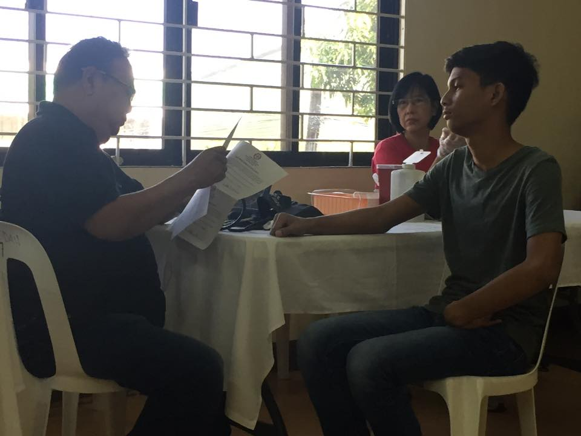

Hemophilia is usually an inherited bleeding disorder in which the blood does not clot properly. This can lead to spontaneous bleeding as well as bleeding following injuries or surgery. Blood contains many proteins called clotting factors that can help to stop bleeding. People with hemophilia have low levels of either factor 8 (Hemophilia A) or factor 9 (Hemophilia B). The severity of hemophilia that a person has is determined by the amount of factor in the blood. The lower the amount of the factor, the more likely it is that bleeding will occur which can lead to serious health problems.
If you have hemophilia, you might bleed for a longer time after an injury than you would if your blood clotted properly. Small cuts usually aren't much of a problem. If you have a severe form of the condition, the main concern is bleeding inside your body, especially in your knees, ankles and elbows. Internal bleeding can damage your organs and tissues and be life-threatening.
Hemophilia is almost always a genetic disorder. Treatment includes regular replacement of the specific clotting factor that is reduced. Newer therapies that don't contain clotting factors also are being used.

Hemophilia is caused by a mutation or change, in one of the genes, that provides instructions for making the clotting factor proteins needed to form a blood clot. This change or mutation can prevent the clotting protein from working properly or to be missing altogether. These genes are located on the X chromosome. Males have one X and one Y chromosome (XY) and females have two X chromosomes (XX). Males inherit the X chromosome from their mothers and the Y chromosome from their fathers. Females inherit one X chromosome from each parent.
When a person bleeds, the body typically pools blood cells together to form a clot to stop the bleeding. Clotting factors are proteins in the blood that work with cells known as platelets to form clots. Hemophilia occurs when a clotting factor is missing or levels of the clotting factor are low.
The X chromosome contains many genes that are not present on the Y chromosome. This means that males only have one copy of most of the genes on the X chromosome, whereas females have 2 copies. Thus, males can have a disease like hemophilia if they inherit an affected X chromosome that has a mutation in either the factor VIII or factor IX gene. Females can also have hemophilia, but this is much rarer. In such cases both X chromosomes are affected or one is affected and the other is missing or inactive. In these females, bleeding symptoms may be similar to males with hemophilia.
A female with one affected X chromosome is a “carrier” of hemophilia. Sometimes a female who is a carrier can have symptoms of hemophilia. In addition, she can pass the affected X chromosome with the clotting factor gene mutation on to her children.
Even though hemophilia runs in families, some families have no prior history of family members with hemophilia. Sometimes, there are carrier females in the family, but no affected boys, just by chance. However, about one-third of the time, the baby with hemophilia is the first one in the family to be affected with a mutation in the gene for the clotting factor.
Hemophilia can result in:


Common signs of hemophilia include:
Hemophilia occurs in about 1 of every 5,000 male births. Based on recent study that used data collected on patients receiving care in federally funded hemophilia treatment centers during the period 2012-2018, about 20,000 as many as 33,000 males in the United States are living with the disorder. Hemophilia A is about four times as common as hemophilia B, and about half of those affected have the severe form. Hemophilia affects people from all racial and ethnic groups.
Signs and symptoms of hemophilia vary, depending on your level of clotting factors. If your clotting-factor level is mildly reduced, you might bleed only after surgery or trauma. If your deficiency is severe, you can bleed easily for seemingly no reason.
Diagnosis
Many people who have or have had family members with hemophilia will ask that their baby boys get tested soon after birth. About one-third of babies who are diagnosed with hemophilia have a new mutation not present in other family members. In these cases, a doctor might check for hemophilia if a newborn is showing certain signs of hemophilia. To make a diagnosis, doctors would perform certain blood tests to show if the blood is clotting properly. If it does not, then they would do clotting factor tests, also called factor assays, to diagnose the cause of the bleeding disorder. These blood tests would show the type of hemophilia and the severity.
Severe cases of hemophilia usually are diagnosed within the first year of life. Mild forms might not be apparent until adulthood. Some people learn they have hemophilia after they bleed excessively during a surgical procedure.
Clotting-factor tests can reveal a clotting-factor deficiency and determine how severe the hemophilia is.
For people with a family history of hemophilia, genetic testing might be used to identify carriers to make informed decisions about becoming pregnant.
It's also possible to determine during pregnancy if the fetus is affected by hemophilia. However, the testing poses some risks to the fetus. Discuss the benefits and risks of testing with your doctor.
Treatment
The main treatment for severe hemophilia involves replacing the clotting factor you need through a tube in a vein.
This replacement therapy can be given to treat a bleeding episode in progress. It can also be given on a regular schedule at home to help prevent bleeding episodes. Some people receive continuous replacement therapy.
Replacement clotting factor can be made from donated blood. Similar products, called recombinant clotting factors, are made in a laboratory, not from human blood.
The best way to treat hemophilia is to replace the missing blood clotting factor so that the blood can clot properly. This is done by infusing (administering through a vein) commercially prepared factor concentrates. People with hemophilia can learn how to perform these infusions themselves so that they can stop bleeding episodes and, by performing the infusions on a regular basis (called prophylaxis), can even prevent most bleeding episodes.
Good quality medical care from doctors and nurses who know a lot about the disorder can help prevent some serious problems. Often the best choice for care is to visit an available Hemophilia treament centers in your area. These centers not only provide care to address all issues related to the disorder, but also provides health education that helps people with hemophilia stay healthy.
About 15-20 percent of people with hemophilia develop an antibody (called an inhibitor) that stops the clotting factors from being able to clot the blood and stop bleeding. Treatment of bleeding episodes becomes extremely difficult, and the cost of care for a person with an inhibitor can skyrocket because more clotting factor or a different type of clotting factor is needed. People with inhibitors often experience more joint disease and other problems from bleeding that result in a reduced quality of life.